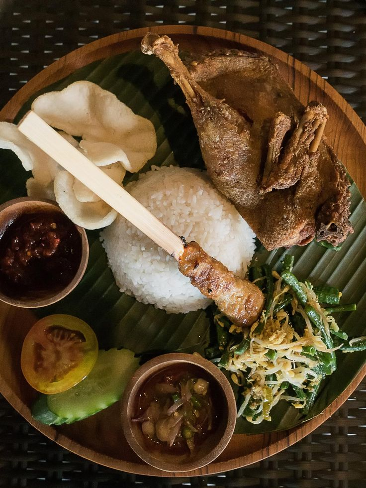

Sensasi Gurih Bebek Sinjay Madura: Kuliner Legendaris Khas Jawa Timur
Bebek Sinjay merupakan salah satu kuliner legendaris yang berasal dari Pulau Madura, Jawa Timur. Bebek Sinjay terkenal dengan cita rasa gurih yang khas dan tekstur daging yang empuk. Proses pembuatan Bebek Sinjay sendiri membutuhkan keahlian khusus, di mana bebek dipotong menjadi beberapa bagian dan kemudian dibumbui dengan rempah-rempah pilihan serta digoreng dalam minyak panas hingga matang dan berwarna kecoklatan.
Salah satu hal yang membuat Bebek Sinjay begitu istimewa adalah bumbu pedas yang digunakan. Bumbu pedas ini terbuat dari campuran cabai, bawang putih, bawang merah, dan berbagai rempah-rempah lainnya yang dihaluskan dan kemudian dicampur dengan minyak goreng panas. Bumbu ini akan memberikan sensasi pedas yang menggigit namun tetap nikmat saat disantap. Selain itu, Bebek Sinjay juga disajikan dengan sambal kecap yang khas. Sambal kecap ini terbuat dari campuran kecap manis, cabai rawit, bawang merah, dan bawang putih yang dihaluskan hingga membentuk pasta yang kental dan memiliki rasa manis pedas yang lezat. Paduan antara daging bebek yang gurih, bumbu pedas yang menggigit, dan sambal kecap yang khas membuat Bebek Sinjay menjadi kuliner yang sangat disukai oleh banyak orang.
Bebek Sinjay tidak hanya enak untuk disantap, tetapi juga mengandung banyak nutrisi yang baik untuk kesehatan. Daging bebek kaya akan protein dan rendah lemak, sehingga cocok untuk menjadi bagian dari menu makanan sehari-hari. Selain itu, rempah-rempah yang digunakan dalam pembuatan Bebek Sinjay juga memiliki manfaat kesehatan, seperti meningkatkan metabolisme dan sistem pencernaan. Bebek Sinjay dapat dengan mudah ditemukan di berbagai warung makan atau restoran di Jawa Timur, terutama di daerah asalnya, Pulau Madura. Jadi, jangan lewatkan kesempatan untuk mencicipi sensasi gurih Bebek Sinjay Madura saat berkunjung ke Jawa Timur. Rasakan kelezatannya dan nikmati pengalaman kuliner yang tak terlupakan dari kuliner legendaris khas Jawa Timur ini.
Dengan kelezatan dan keunikan cita rasa yang ditawarkannya, Bebek Sinjay Madura layak menjadi salah satu kuliner legendaris yang wajib dicoba saat mengunjungi Jawa Timur. Keindahan budaya kuliner Indonesia terutama Jawa Timur tercermin dalam kelezatan dan keanekaragaman hidangan-hidangan tradisionalnya. Jadi, jangan lewatkan kesempatan untuk menikmati sensasi gurih Bebek Sinjay Madura dan menjadikannya bagian tak terpisahkan dari petualangan kuliner Anda di Jawa Timur.